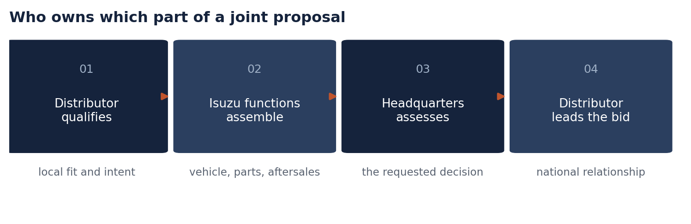
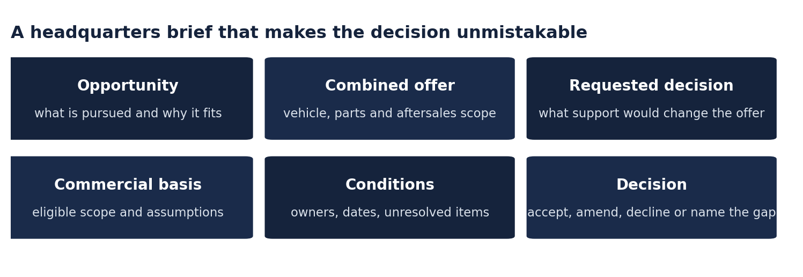
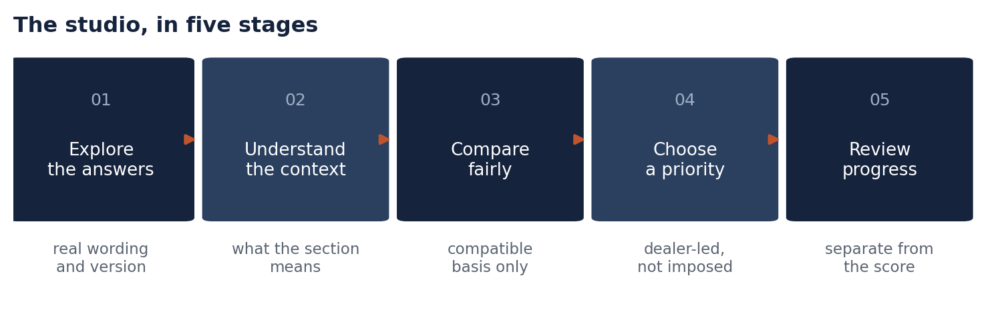
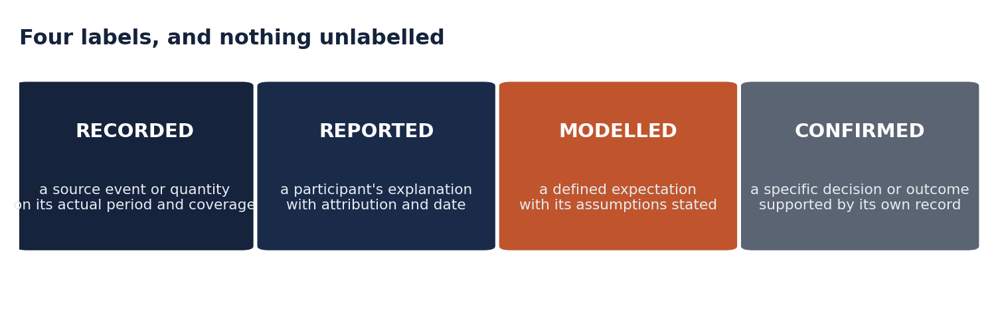
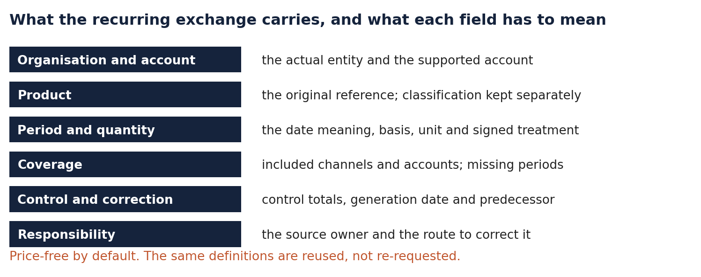
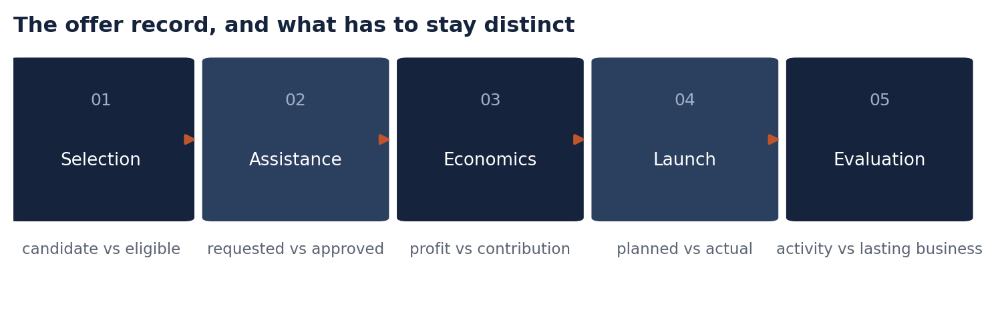

Design detail and reference rules · 23 September 2026 · Companion to the 25-page paper
Detail behind chapters 5, 6 and 7 of the main paper, plus the reference rules the tool output depends on. Nothing here changes the recommendations or the money in the main paper. It exists so that a reader who wants to know how a release should behave can find it without reading a design specification in the middle of a funding case.
Three parts. Part A is the full proposing framework for tenders and headquarters support. Part B is the IDS Development Studio in full. Part C is the reference rules — what a measure means, how periods and identities must stay apart, what the recurring exchange should carry, and the record each application keeps.
This annex restores material that the review of 22 September cut from the 80-page edition when it moved the money and the participation case to the front. The 80-page edition and the Commercial Tools Edition of the same date are both withdrawn; this annex is the part of their content that the main paper no longer carries.
A tender is a specific collaboration, not a general network discussion. The lead distributor qualifies a local opportunity, the relevant Isuzu entities assemble a combined vehicle and aftersales proposition, and headquarters receives a brief that makes the requested decision unmistakable. The value is a stronger joint proposition and less reconstruction between functions, not a longer document.

Each function confirms the part of the offer it has authority to provide. One function's agreement does not display the whole proposal as approved.
| Participant | Contribution to the selected proposal |
|---|---|
| Lead distributor | Local requirements, commercial intent, bid ownership and the customer relationship |
| Vehicle-sales function | Vehicle offer, relevant product positioning and decisions within its authority |
| ISZE parts function | Parts scope, supported analysis and the proposed aftersales contribution |
| Manufacturer / headquarters | Selected technical, product or support decisions requiring its authority |
The actual participants depend on the opportunity. The framework does not presume a universal headquarters committee, and a vehicle commitment cannot be inferred from a parts analysis. A technical confirmation is not a financial concession.
The brief should lead with the opportunity and the specific support that would change the offer. It distinguishes what is known, what is proposed, and what remains dependent on another function.

| Section | What the proposer completes |
|---|---|
| Opportunity | Lead distributor, source, requirement, known deadline and intended pursuit |
| Combined offer | Vehicle and aftersales scope; participating functions and assumptions |
| Requested decision | The specific support or confirmation required, its recipient and the decision deadline |
| Commercial basis | Eligible activity, the unchanged alternative, relevant costs and the proposed contribution |
| Responsibilities | Owner for each contribution; confirmed commitments and unresolved dependencies |
| Outcome and learning | Actual submission, decision, known result and the reviewed reusable lesson |
Each statement carries its status: a documented requirement, distributor intent, a proposed contribution or a confirmed decision. Changes to scope or conditions identify the earlier version they affect.
Vehicle revenue, parts revenue and a tender's total advertised value remain separate concepts. A tender's overall value is not expected Isuzu parts revenue, and an award is not parts billed.
Readiness should be explained by requirements, not compressed into an artificial score. The framework shows separate evidence checks instead: opportunity requirements identified, lead distributor confirmed, relevant functions assigned, eligible offer scope described, commercial assumptions stated and requested support defined. A missing item identifies the decision it prevents and the role that can resolve it.
These checks do not establish the likelihood of winning. They describe the preparation of the proposal. A complete set can make a proposal ready for review while approval and award remain unknown.
A complete draft is not an approval, and does not grant access to headquarters or claim that a tender has been accepted. The operating version would retain actual documents, accountable owners and source dates, and requirement or deadline changes would be versioned so every function can see whether the proposal it reviewed is still the one being pursued.
Support should be assessed against a defined commercial proposition, not an assumed share of a notice value.
| State | What it records |
|---|---|
| Requested | The eligible support and its commercial purpose |
| Approved | The actual decision, its terms and the authority behind it |
| Observed | Award and related parts business, on their own evidence |
The proposal identifies the eligible parts or activities, proposed terms, relevant period and beneficiary. The financial comparison uses the same scope for the unchanged and the supported offer. Any forecast quantity is identified as a requirement, a commitment or a scenario rather than measured demand.
ISZE parts gross profit can be compared on the documented net selling price and parts purchase cost basis. Other support and programme costs are shown separately when assessing contribution. A payment or concession is not automatically additional network profit: it is a cost to one party and a benefit to another. Where support is already included in the net price, it must not be deducted again.
The manufacturer decision may also have a strategic rationale that is not reducible to a short-term parts calculation. That rationale should be stated rather than hidden inside an exaggerated return.
An illustrative journey. No actual value, customer or award is implied.
Each opportunity should improve the next proposal. The reusable asset is a clearer method and better evidence, not unrestricted access to previous bids.
Learning should include opportunities not pursued and support not approved, as well as awarded tenders. A reasoned decision can prevent wasted effort, and a reported reason for losing remains attributed unless the evidence supports a stronger conclusion.
The record keeps preparation effort, quality of the decision and commercial outcome distinct. Less preparation time can be useful even when the tender is not won. An award can occur for reasons unrelated to the framework. The programme must not select only favourable outcomes when evaluating its own usefulness.
What stays outside the framework. Actual customer contact, quotation production, technical approval, supply confirmation and tender submission remain in existing processes. Universe does not promise live availability and does not create new delivery obligations. It may retain a reference to an authorised decision when that helps evaluate the initiative.
Isuzu Dealer Standards records the dealer's self-assessment. The studio makes that information explorable by section and question, retains its source wording, and helps the dealer turn a relevant priority into a development project one it controls. The product value is the ability to understand, choose, act and review in one coherent view.
The dealer remains an active participant. A development objective is selected with the distributor rather than imposed by a low score, and it can concern the way the business manages its range, plans commercial activity or develops a customer segment where the questionnaire and the commercial evidence support that discussion.

Make the original assessment understandable before anyone asks the dealer to select a project.
The profile shows the actual questionnaire version, section, question and recorded answer. A recorded date or round identifies the assessment; an import date must not be substituted for a missing assessment date. Unanswered, not applicable and not supplied remain distinct states.
A section view helps the dealer locate topics worth examining. A question view retains the detail that explains the section. Where a comparison group is appropriate and permitted, it uses a compatible questionnaire and a defined population, and it provides context rather than a distributor audit or a ranking of personal competence.
The dealer should be able to bookmark a relevant topic, add a clarification and nominate a development ambition. That preserves the distinction between what the assessment recorded and what the dealer now intends to do.
The project should describe what becomes better for the dealer, not which box will be completed.
| Step | The question it answers |
|---|---|
| Ambition | What should improve? |
| Baseline | What happens today? |
| Work | Who will do what? |
| Evidence | What would show implementation? |
The dealer and distributor identify the starting position, the work required, and the evidence that would show implementation. They also identify any assistance expected from ISZE or another function. A project waiting for that assistance remains distinguishable from a dealer project that has not progressed.
The plan should be proportionate. A short project can have a small number of meaningful milestones; it does not need a complexity score or a mandatory financial claim. A more substantial development proposal may include resources, investment and an explicit review of its commercial rationale.
Keep the starting assessment, the project and any later reassessment visible beside one another. The structure is in the main paper, Figure 12.
The interface allows the user to move along the development timeline and inspect each recorded change. Completing a milestone can advance project progress. It does not amend the original answer, raise an assessment score, or prove a commercial outcome.
A later reassessment can add new evidence. Comparison is useful only where the questionnaire, the scoring basis and the relevant population are compatible. Where they are not, the tool can show both records accurately without presenting a misleading trend.
This separation makes progress credible. A dealer can demonstrate implemented work before another assessment round exists, and an incomplete project remains visible without erasing the value of the original assessment.
Milestone states are states of the development work, not new IDS scores. The record should identify the state, the date, the relevant evidence and the person responsible for the next step. A completed milestone records what was accepted and by whom. A deferral, a changed objective or a missing supporting contribution remains visible with its reason.
Visible progress is valuable only when the work and its practical effect can be explained.
| Measure | What it is |
|---|---|
| Implemented | Work actually completed |
| Useful | The participant's judgement |
| Commercial | A matched result, where known |
| Reassessed | A later actual IDS record |
Where a commercial outcome is evaluated, the record preserves a defined starting position and a compatible later observation, and it considers changes in product mix, market conditions, account scope and other initiatives. A before-and-after movement can be reported without claiming the project caused all of it.
A participant with no eligible project at a particular time is not inactive.
A purchasing pattern can sharpen a development discussion without becoming an explanation of the assessment.
A dealer-development conversation can be more useful when it includes an appropriate commercial observation: a range review may examine the composition of recorded purchasing, and a commercial-planning project may use a selected campaign baseline. The observation retains its own period and transaction meaning.
The link requires a validated relationship between the source account and the assessment. A country name, a similar dealer name or a submission group is not sufficient. When the relationship is unresolved, the sources can remain available separately rather than be forced into a combined judgement.
An assessment answer does not establish why purchasing changed. A strong self-assessment and a low measured spend per vehicle can concern different populations, definitions and time periods. The value of the connection is a better development question, not a causal verdict.
The dealer should see the original wording and be able to correct the interpretation. That can improve both the commercial review and the relevance of the selected project. A correction that reduces the apparent problem is useful information.
A dealer may need a specific resource to complete an agreed development project: relevant analytical guidance, a product-learning resource, or a bounded improvement activity. The project record can identify that need, the expected deliverable and the role that would provide it.
| Who | What it owns |
|---|---|
| Dealer | The selected development work |
| Distributor | Review of relevance and its own contribution |
| ISZE or a specialist | The specific assistance actually agreed |
Any co-investment proposal states its cost basis, eligible work, recipient and approval route. A proposed allocation is not a payment commitment. A project must not gain standing by submitting more sensitive information, reporting an inflated score or claiming an unsupported sales improvement.
ISZE and the distributor distinguish their own commitments from the dealer's milestones. The interface can show that an input has been requested, confirmed or delivered without declaring the whole project complete, so the participant can see what it controls and what it is waiting for.
A project can also proceed without financial assistance, using the tools and knowledge already available. That route is a normal option, not a fallback.
The method can become reusable without sharing a dealer's private project record.
An implemented project may contain a lesson worth sharing: a clearer review method, a useful product comparison, or an effective way to organise a commercial initiative. ISZE and the distributor can prepare a reviewed example describing its purpose, conditions, effort and evidence.
The shared example contains only the information required to understand the method. Private comments, detailed financial terms and sensitive business circumstances remain in the original project. The contributor can correct the account and decide whether an identifiable example may be published.
Recognition can acknowledge a useful correction, an implemented improvement or a transferable method. It is not a public league table based on turnover, uploaded records or self-assessment scores, and a dealer can decline publicity without losing access to the tools.
Every substantive claim in the paper and this annex carries one of four labels.

| Label | How to describe it |
|---|---|
| Recorded | A source event or quantity on its actual period and coverage |
| Reported | A participant's explanation, with attribution and date |
| Modelled | A defined expectation or scenario, with its assumptions |
| Confirmed | A specific decision or outcome supported by its own record |
| Term | Meaning |
|---|---|
| Parts billed | ISZE sales to the stated distributor on the stated source basis |
| Sales to dealer | The distributor's recorded onward purchasing stage, at its own source and period |
| Recorded workshop use | A separate observation, not additive to either of the above |
| Parts gross profit | Revenue less the documented parts purchase cost of the quantities sold; freight, duty, overheads and distributor rebates excluded |
| Gross margin | Parts gross profit divided by revenue |
| Campaign contribution | Parts gross profit less additional campaign costs not already included |
| Reference price | The applicable list reference for the stated entity and period; a reference valuation is not a transaction |
| Deep concession | A billed price at least 20% under the reference price, on a line carrying a reference price |
| Eligible fleet | The vehicles supported by the selected application evidence |
| Spend per truck | A measured purchasing rate on a stated fleet basis |
| Target spend | A modelled expectation, which depends on assumptions and technical applicability |
| Progress | Project implementation, which is not a reassessment and not a commercial outcome |
Parts billed, sales to dealer and recorded workshop use must not be added together as network revenue, and must not be subtracted to infer inventory without the stock evidence.
A monetary result identifies its currency, price level, date and valuation basis. A quantity-only source does not create recorded resale revenue or gross profit. A permitted reference valuation is a reference valuation, not a transaction.
A quantified opportunity needs three things: the euro basis, the product family or service category, and the eligible fleet or exposure. Where the relevant population or economic basis is missing, report a descriptive observation or a proposed investigation instead of assigning a recoverable-sales value.
| Level | What it is |
|---|---|
| Organisation | The actual commercial entity |
| Account | The source purchasing identity |
| Site | Used only where validated |
| Record | The original part and the evidence around it |
A purchasing account is not automatically a physical workshop. A dealer company can have several sites, and a source can combine them under one account. The programme retains the original identifier and name, then adds only validated relationships with their effective dates.
The same principle applies to parts. The original transacted reference remains available alongside its classification and any separately governed successor or candidate BVP relationship. A later relationship must not silently rewrite a historical transaction.
IDS questions need their questionnaire version and source location as well as any local code. A repeated question code is not necessarily the same question, and assessment dates, reporting months and project-update dates serve different purposes.
Unmatched records remain visible in their appropriate source totals. A relationship must not multiply values or remove genuine business because the product cannot yet connect the record.
Keep calendar and fiscal periods distinct. Isuzu's fiscal year runs April to March, while the historical examples in the main paper compare full calendar years. The billing reference for 2026 runs through 30 June 2026 and is a half year, not a full-year observation.
| Comparison | Required treatment |
|---|---|
| January to June against a full year | Do not describe the difference as growth or decline |
| National against dealer records | Use each at its supported level; do not invent an allocation |
| Recorded against expected service | State the technical model and the eligible population |
| Old and corrected submissions | Replace the declared scope; do not add both versions |
A missing month is not filled with zero. An absent transaction line may be different from a source owner confirming no activity.
Historical market fleets provide context where supported. They are not distributed across dealers by sales share, visits or geography, and parts that fit several vehicle classes are not allocated by fleet share and then described as measured class purchasing.
ITUK is not IUK, and UMI is not UTI. Country aggregation must not silently combine their fleets or purchasing behaviour.

The recurring standard describes business meaning rather than a prescribed technical file layout. The distributor and ISZE agree the included scope, the reporting calendar, the source owner and the correction method before treating a source as a recurring exchange.
| Information | Business definition to retain |
|---|---|
| Organisation and account | The actual distributor and the supported purchasing-account identity |
| Product | The original reference; classification and relationships kept separately |
| Period and quantity | The date meaning, calendar or fiscal basis, the unit and the signed treatment |
| Coverage | Included products, channels and accounts; missing periods and wholesale scope |
| Control and correction | Comparable control totals, generation date, version and predecessor |
| Responsibility | The source owner, and the route for a definition change or a correction |
Retain identifiers as text, including any leading characters. Keep returns and adjustments distinguishable from positive activity. A revised month replaces its declared predecessor rather than becoming an additional month.
The default exchange is price-free. Selling prices, resale margins, customer identities, vehicle identifiers, full inventory and workshop job cards are not silently added to it. Sensitive financial or operational additions require an application-specific purpose and audience. An approved locally calculated aggregate may answer the question without transferring the underlying commercial book, and an aggregate is not automatically anonymous.
Already supplied definitions are reused instead of repeatedly requested. Identical re-imports add no activity. Annual controls are not added to monthly observations, and national controls are not added to their dealer detail. Combined accounts stay combined unless the source genuinely supports a split.

| Record | Key distinction |
|---|---|
| Selection | Candidate against eligible product and audience |
| Assistance | Requested against approved against actually provided |
| Economics | Gross profit against contribution after additional campaign costs |
| Launch | Planned dates against actual dates and confirmed conditions |
| Evaluation | Campaign activity against lasting additional business |
The record states the participant, the commercial objective, the original product references, the application and pack basis, the audience definition and the intended validity. A complete draft remains a draft until the relevant conditions and authority are confirmed.
The financial comparison identifies baseline and proposed quantities, net prices, documented parts purchase cost, currency and effective dates. Fixed campaign expense and support are shown separately where they are not already included. A price-class margin is not substituted for the actual scenario margin.
The result record uses the same eligible scope and states its follow-up period. It identifies returns, product displacement, account or coverage changes and other interventions where known. A later purchase is an observation, not automatic proof that the promotion caused additional demand.
The tender proposal structure is in A3. Its outcome section keeps support decisions, bid submission, award and related business as separate states, and retains the reviewed lesson.
The IDS development record is in B2. Its assessment reference contains the original source, questionnaire, actual answer and available date; the development record contains the objective, the starting position, agreed milestones, owners and evidence. A later reassessment is a new record, not an automatically updated score.
Each application has its own evidence needs. A missing optional source narrows the affected application, not the whole programme.
| Application | First useful output | Additional requirement before operating |
|---|---|---|
| Atlas | A product-level explanation of a movement | A pinned classification release and a supported period |
| IDS progress | An explorable profile and a development plan | A validated source identity and real project evidence |
| Tender collaboration | A structured opportunity and support proposal | Confirmed requirements, participants, authority and actual decision dates |
| Deal of the Day | A selected offer scenario and a preparation brief | Approved terms, practical launch conditions and an evaluation basis |
There is no universal requirement to supply prices, stock, customer identities or workshop records.
The production implementation must test these requirements at the point of use. A demonstration checklist or a good-looking screen is not evidence that the operating permissions, source validation and commercial authority have been implemented.